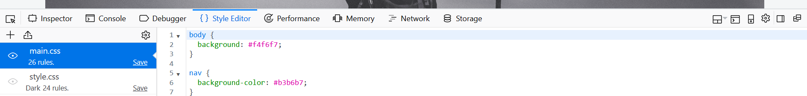

Introduction
I wanted to visually plan my page before it was created. Mockingbird is software, which would allow me to create and share clickable wireframes. It is used to make mockups of websites in minutes.
Website design

Design for the dark edition

How to switch between stylesheets
My second stylesheet can be viewed in Firefox by right clicking on my page and selecting the inspect element. The diagram below shows how that the "main.css" is being used to syle my website.To switch between the stylesheets you should click on the second stylesheet, which is called "style.cc". 